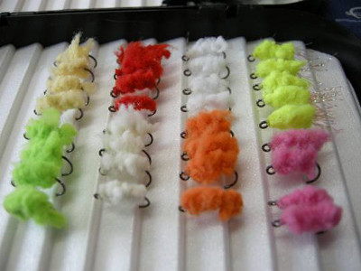
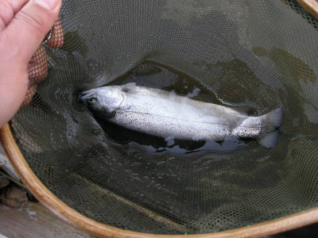
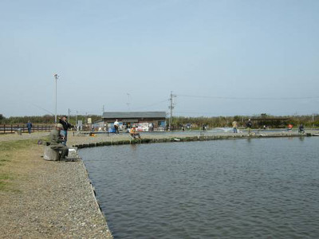

釣行日誌 故郷編
2008/3/23 春の一日
朝日を浴びながら国道一号線を浜名湖へ向けて走る。浜名湖に面した橋の上からは大勢の釣り人が竿を出している。道路脇の看板を見つけて少し脇道に入るとそこが浜名湖フィッシングリゾートである。今日は、行きつけの釣具屋さんで、ここがいいよと情報を仕入れて来たのだ。
駐車場に車をとめて、いそいそと支度をし、受付に入ろうとするともうみんな竿を出して釣っている。あれ？と思って聞いてみると、前の週末から、営業時間が早くなったらしい。知っていればもう少し早く家を出たのにと思いつつ、チケットを買って釣りを始める。日差しは心地よく、風も少なく、絶好の釣り日和である。
初めての釣り場なので、どこがいいのかさっぱりわからないが、ちょうど空いていて、椅子になる丸木が置いてあったホテル側の隅っこで釣り始める。今日は、新しく巻いた、エボレスフライと、ツインボールマーカーなるものを試すのだ。エボレスフライは、ただのもじゃもじゃのようなマテリアルで、こんなもので釣れるのかなぁと思う。ま、店のおやじさんの弁を信じて釣るしかあるまい。

最初のフライは、蛍光黄緑色を選び、ティペットは4Xを結んだ。気合いを入れて第一投をすると、オレンジ色の小さなマーカーが二個、沖合に浮かび、釣れそうな雰囲気が漂ってくる。じぃぃぃーっとマーカーを凝視していると、先の方のオレンジ色がぴくんと動き、スッと沈んだ。よしっ！ と合わせると、心地よいが少々物足りない引きで、30cmほどのレインボーが釣れた。大物狙いで６番ロッドを使っているので、このぐらいの鱒ではちょっと面白くない。それでも、おなじクラスのレインボーが次々と釣れ、さい先の良いスタートとなった。たしかに新しいマーカーの感度は優れており、微妙なアタリがよくわかる。

10尾ぐらい釣ったところで、ちょっと型の良い鱒がかかり、取り込みに夢中になっていたら、リーダーを引き込み過ぎて、ツインボールマーカーの所まで引き込んでしまった。このマーカーは小さな発泡素材の玉を接着剤で留めているだけなので、ロッドのトップガイドに当たると簡単に外れてしまい、玉が二個、いっしょの位置に並ぶようになってしまった。これではただのマーカーの役目しか果たさないので、交換することにした。このあたりは改善の余地があると思う。まぁ、材料を揃えれば、簡単に自作はできるのだが。

午前中は順調に釣果が伸びたが、午後になるとアタリが止まった。そこで、フライを黒色のビーズヘッドマラブー14番に替えてみるとこれが奏功して、また連続してアタリが出るようになった。特に、沖合ではなく、やや岸に近いカケアガリの辺でよくアタリがあるようだ。沖にキャストして、風に流されてきたマーカーが岸から５メートル程の位置に来るとアタリがある。ピクピク、モゾモゾとしたアタリを合わせてみると、どっしりとした手応えと共に水中の魚が走り出した。おっ！これはこれはと慎重になり、しばらく引きを楽しんでいると、とうとう弱った魚が寄ってきた。60cmクラスのレインボーである。渓流用のネットには入らないので、注意深く手でランディングして、リリースしてやった。残念ながら写真は撮れなかった。
黒のマラブーにも慣れてしまったのか、またアタリが遠のいたので、今度はエボレスフライの色のローテーションを試すことにした。ピンクで２尾、オレンジはアタリのみで掛からず、白はアタリなしであった。そんなこんなをしていたら、あっという間の営業時間終了の午後５時となり、しかたなくロッドを仕舞った。これからがいい時間帯なのに、暗くなるまで釣らせてくれないかなぁと思う。
今日は、エボレスフライとツインボールマーカーの効き目もわかったし、良い釣りができた。心地よい疲労とともに帰宅したのは夕方７時であった。
釣行日誌 故郷編 目次へ
サイトマップ
ホームへ
お問い合わせ